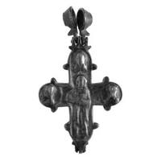
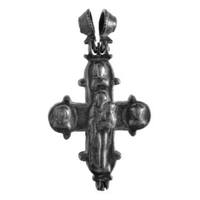

Catalog › CE-0398 · VSM2014-1
Encolpion bivalv din aramă, cat. 1, Muzeul Vladimir–Suzdal
a doua jumătate a sec. XII – prima jumătate a sec. XIII (1151–1250) · Suzdal, Rusia · Muzeul-rezervație de stat Vladimir–Suzdal (Владимиро-Суздальский музей-заповедник), fondul „Metal” (Металл), inv. В-2908
double-sided reliquary cross (enkolpion), aramă; a doua jumătate a c. XII – prima jumătate a sec. XIII (1151–1250); found at Suzdal, Rusia; kept at Muzeul-rezervație de stat Vladimir–Suzdal (Владимиро-Суздальский музей-заповедник), fondul „Metal” (Металл).




Identificare
- Categorie
- Encolpion bivalv (relicvar)
- Material
- Aramă
- Tehnică
- Turnare în relief
- Stare
- Întreagă
- Dimensiuni
- Î 137 × L 75 × Gr 20 mm
Iconografie
- Avers
- Neidentificat
- Descriere avers
- În centru, Hristos în față, binecuvântând cu dreapta și ținând Evanghelia la piept cu stânga. În medalioanele de la capetele brațelor laterale, busturi de sfinți în semiprofil spre Hristos; la capătul de sus, bust de sfânt din față. Imaginile sunt în relief, foarte șterse.
- Revers
- Maica Domnului cu Pruncul; Neidentificat
- Descriere revers
- În centru, Maica Domnului Hodighitria în picioare. În medalioanele de la capetele brațelor de sus și laterale, busturi de sfinți din față.
Datare și atribuire
- Datare
- a doua jumătate a sec. XII – prima jumătate a sec. XIII (1151–1250)
- Centru
- Necunoscut
- Tipologie
- cruce-encolpion masiv, cu terminații rotunjite și proeminențe în formă de picătură pe capete; iconografie rară a feței
Descoperire
- Localitate
- Suzdal
- Țară
- Rusia
- Context
- Necunoscut
- Coordonate
- 56.4194° N, 40.4488° E
- Precizia locului
- Doar localitatea
Păstrare și referințe
- Colecție
- Muzeul-rezervație de stat Vladimir–Suzdal (Владимиро-Суздальский музей-заповедник), fondul „Metal” (Металл)
- Nr. inventar
- В-2908
- Bibliografie
- Н. А. Кокорина (сост.), Литые нагрудные кресты с древнерусской иконографией из фондовой коллекции «Металл» Государственного Владимиро-Суздальского музея-заповедника : Каталог, Vladimir, 2014, 43 p. [Kokorina 2014], cat. nr. 1, cu fotografia reprodusă la același număr. Text și imagini pe azbyka.ru: https://www.azbyka.ru/otechnik/ikona/litye-nagrudnye-kresty-s-drevnerusskoj-ikonografiej-iz-fondovoj-kollektsii-metall-gosudarstvennogo-vladimiro-suzdalskogo-muzeja-zapovednika/ (accesat 17.10.2026)
- Figura
- Kokorina 2014, fotografia de la cat. 1
- Planșe
- Kokorina 2014, catalogul crucilor-encolpion, nr. 1 (pagina tipărită nu e dată în ediția online)
- Analogii
- Korzuhina–Peskova, Древнерусские энколпионы: încă trei encolpioane cu aceeași iconografie a feței (unul în Rusia veche, două în Italia), după Kokorina 2014.
- Observații
- Material: aliaj de cupru. Oglavie mobilă, în formă de mărgea biconică goală, cu brâu în relief și rulouri crestate pe marginea orificiului. Marginile valvelor și medalioanelor au un rulou neted, cu crestături pe alocuri; pe unele proeminențe în formă de picătură sunt adâncituri. Rezervor interior adânc și bine marcat. Patinat; mărgeaua oglaviei e deschisă, valvele nu se deschid. Provine din Suzdal. Singura piesă din fondul „Metal” publicată înainte de catalog: G. F. Korzuhina, A. A. Peskova, Древнерусские энколпионы (catalog). După Kokorina, tipul cu această iconografie a feței mai e cunoscut la alte trei piese, una găsită în Rusia veche și două în Italia; cruce datată a doua jumătate a sec. XII – prima jumătate a sec. XIII. Coordonate: ale localității (aproximative), nu date în sursă.
Citare: Corpus Encolpiorum, CE-0398, Encolpion bivalv din aramă, cat. 1, Muzeul Vladimir–Suzdal, https://vitaliejosanu1979-ux.github.io/primul-meu-proiect/piese/VSM2014-1/ (accesat 2026-10-17).